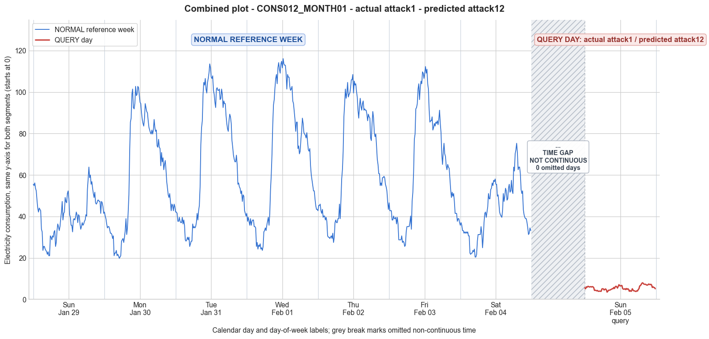

CONS012_MONTH01 · actual attack1 · predicted attack12
- Pair
- CONS012_MONTH01
- GT
- attack1
- Prediction
- attack12
- Binary GT
- attacked
- Binary Prediction
- attacked
- Source
- E010
- Parse
- stored
- Date
- 2012-02-05
- Weekday
- Sunday
- Latency
- 2.96 min
- Tokens
- 11541

Final output
Classification: - Manipulated Identified Attack: - Most Likely: Attack 12 - Confidence: Medium - Reasoning: The query day's consumption (mean 5.43) is far below the reference week minimum (mean 40.58 on the same weekday) and below the absolute daily minimum (19.78). The diurnal pattern differs substantially from the reference Sunday: the original has high midnight consumption (55.52) and a distinct shape, while the query day starts low (5.53) and shows a more symmetric curve. This rules out constant scaling (Attack 1) and per-sample random scaling (Attack 3), which would preserve the original relative shape. The entire day is affected with no zeros, eliminating on‑off attacks (Attack 2, Attack 7, Attack IEEE). No flat cap (Attack 6), no constant average (Attack 9), and no random‑around‑mean (Attack 5) are present. Attack 4 might cover full‑day reduction but is typically defined for partial periods; the clean, plausible consumption pattern points to a swapped meter profile (Attack 12). Thus, the most likely attack is identity theft via pattern replacement. Attack_Behavior_Explanation: - The attacker replaces the entire 24‑hour consumption sequence with readings from a different, lower‑consumption household. The reported values are genuine usage data from another meter, not a mathematical transformation of the original data. - Magnitude is drastically reduced (mean from 40.58 to 5.43, a ~86% drop). The trend changes completely: the original Sunday’s high midnight load and specific fluctuations are replaced by a distinctly different diurnal shape, with a small evening peak and no late‑night spike. - Possible technical causes: false data injection, where the adversary injects meter readings collected from a compromised or colluding low‑consumption smart meter, causing the victim utility to under‑bill the attacker while shifting the cost to the other customer.
Prompt
You are a domain expert in smart grid security and electricity theft analysis, with deep knowledge of non-technical loss (NTL) attack patterns in smart meters. You are given: 1. A plot of one week of original (normal) energy consumption for a smart meter, provided as context for the customer's typical consumption behavior. 2. A plot of one day of energy consumption for the same smart meter, which may or may not be manipulated. Below are common attack types, each defined by how consumption values are altered, their impact on magnitude and trend, and their possible technical causes. Attack 0: Generated by replacing all electricity consumption samples with zero values for the entire observation duration. Simulates a scenario where no energy usage is reported at all. May be caused by a total meter bypass or severe meter malfunction. Completely eliminates both the trend and magnitude of the consumption profile. Attack 1: Multiplies the actual energy consumption by a constant random value between (0,1). The lower the factor, the higher the severity. Can be triggered by meter bypass, magnetic interference, reverse current, and false data injection. The consumption trend remains the same but the magnitude is uniformly reduced. Attack 2: Generated by replacing consumption samples with zeros for a random duration. Also known as an on-off attack. Can be caused by full meter bypass, false data injection, and reverse current. Changes both the trend and amplitude. Attack 3: The actual consumption is multiplied by different random factors between 0 and 1, with a unique factor per sample. Similar to Attack 1 but the scaling factor varies per reading. Caused by meter bypass, magnetic interference, and reverse current. Changes both the trend and amplitude. Attack 4: Simulates energy theft over a randomly selected period within the observation window. All measurements in that period are reduced. Caused by meter bypass, magnetic interference, reverse current, and false data injection. Changes both the trend and amplitude. Attack 5: Each sample is replaced by a false value obtained by multiplying the average normal consumption by a random variable between 0 and 1, with a different variable per sample. Caused by false data injection. Produces a completely different pattern from the original consumption profile, changing both trend and magnitude. Attack 6: A random cut-off point is selected and all consumption values above it are replaced by that cut-off value. The attacker avoids exceeding a predefined maximum limit. Mainly caused by false data injection. Changes both the trend and amplitude. Attack 7: A random cut-off point is subtracted from each sample; if the result is negative, zero is reported. Similar to Attack 6 but replaces exceeding values with zero instead of the cut-off point. May be caused by false data injection or total meter bypass. Does not change the trend but reduces overall consumption. Attack 9: All samples are replaced by the average daily energy consumption, resulting in a flat constant profile. Easily detectable because constant consumption does not reflect normal customer behavior. Caused by false data injection. Eliminates all trends. Attack 10: Reverses the consumption pattern without reducing the total amount. Applicable when the electricity company uses time-varying pricing, allowing the attacker to shift high consumption to off-peak periods. Caused by false data injection. Changes the trend without decreasing total consumption. Attack 12: The attacker replaces their consumption pattern with that of a lower-consuming user. The legitimate user unknowingly pays the adversary's electricity bill. Caused by false data injection. Attack IEEE: For each 15-minute interval across the entire day, the consumer either reports the actual electricity consumption or substitutes it with zero. The result is a profile where some intervals reflect real consumption while others are zeroed out, creating an irregular pattern across the full day. May be caused by false data injection. Changes both the trend and amplitude. Given the two plots, determine: 1. Whether the day is attacked or original - compare the flagged day against the normal week and assess whether the consumption pattern is consistent with normal behavior or shows signs of manipulation. If the day is consistent with the customer's typical consumption behavior, classify it as original and provide no further analysis. If manipulation is detected, proceed to point 2. 2. Which attack type this most likely is - identify the single most probable attack and justify your choice based on how the flagged day deviates from the normal week. 3. The behavior of the identified attack - explain how the consumption values are manipulated, their impact on magnitude and trend, and the possible technical causes behind this type of attack. Output Format: Classification: - Original | Manipulated Identified Attack: (fill only if manipulated) - Most Likely: Attack X - Confidence: High | Medium | Low - Reasoning: Why it matches Attack X and why Attack Y and Attack Z were ruled out (list top 2 alternatives considered) Attack_Behavior_Explanation: (fill only if manipulated) - How consumption values are manipulated relative to the normal week - Impact on magnitude and trend - Possible technical causes
Reasoning content
We are given a reference week of 7 days (Day 0 to Day 6) and a query day (DAY_ID=0) that matches the same weekday (Sunday, dow=6) as Day 0 in the reference week? Actually, check: Reference week Day 0 has cal_month=1, dow=6, dom=0. Query day has cal_month=2, dow=6, dom=7. So it's a Sunday, one week later. So the normal behavior for a Sunday can be inferred from Day 0 of the reference week. The reference week also contains other days (weekdays and a Saturday). But the query day is specifically a Sunday, so we compare primarily to Day 0 of the reference week. Also, the season is Winter, which matches the reference week. Now, compare statistics and actual consumption patterns. Reference Day 0 (normal Sunday): min=21.06, max=63.82, mean=40.58, std=9.88. The readings show a typical residential pattern: early morning low (~20s), then rising to a peak in the evening (~60s). The values range from 21.06 to 63.82, with clear variation. Query day: min=3.48, max=7.98, mean=5.43, std=1.14. The values are extremely low compared to the reference Sunday. The mean is about 1/8th of the normal Sunday mean. The max is 7.98, which is far below the normal minimum of 21.06. So the magnitude is drastically reduced. The trend? Looking at the readings: there is a small diurnal pattern, but it's very subdued. The values range from 3.48 to 7.98, with minor fluctuations. The standard deviation is very low (1.14 vs 9.88), indicating much less variation. The pattern seems to have a slight peak in the evening? Let's see: first few readings: 5.53, 5.12, 6.04, 5.83, 6.24, ... then later: 7.06, 6.65, then 7.78, 7.98, etc. So there is a tiny increase in the evening, but overall, it's almost flat. So the consumption is drastically reduced and the pattern is nearly constant. Now, which attack could cause such a behavior? Attack 0 replaces all samples with zero. This is not the case because values are non-zero. Attack 1 multiplies by a constant random factor between 0 and 1, preserving trend shape but reducing magnitude uniformly. Here, the magnitude is reduced by a factor of about 0.13 (5.43/40.58 ≈ 0.134). The trend: the query day readings have a small bump at the end, similar to the reference day's evening peak but much smaller. The reference day had a peak around 63.82 in the evening. The query day peaks at 7.98. The shape seems somewhat similar: in the reference day, after a low in the early morning, it rises around reading 30-40 (around midday?), then dips, then rises again to peak in the evening. Let's align the 96 readings. Reference Day 0 readings start: 55.52, 54.88, ... Wait, the reference day seems to start at midnight? The first value is 55.52 at midnight? That seems high. In many datasets, day starts at midnight. So for a Sunday, maybe the pattern is different. Actually, typical residential: low overnight, rise in morning, maybe low during day, rise in evening. But looking at Day 0: first reading 55.52, then decreasing to 21.06 at index 22? It's confusing. Let's index: 0:55.52, 1:54.88, 2:56.16,... then around index 18:21.06, then 21.06 again, then later rises. It seems like the day might start at midnight with some consumption from the previous evening? Actually, careful: A day of 96 readings from midnight to midnight. So index 0 is 00:00-00:15, index 1 is 00:15-00:30, etc. For a Sunday, the reference day shows high values at midnight (55.52) which could be from late Saturday night. It then drops to lows in the early morning (21.06 at index 21, which is around 5:15 AM). Then it rises during the day. The query day: first value 5.53, then 5.12, etc. The lowest is 3.48 at index 30 (around 7:30 AM). The highest is 7.98 at index 77 (around 7:15 PM). So it has a similar pattern: a dip overnight/early morning, then small rise. But the magnitude is much lower. The shape is not perfectly scaled because the ratio might not be constant. Let's see if Attack 1 (constant scaling) could produce this. In Attack 1, the actual consumption is multiplied by a constant random value between 0 and 1. That means each reading is multiplied by the same factor. If we compute ratio of query to reference for each reading, would they be constant? Reference day has values ranging 21-63. Query day has 3.48-7.98. The ratio of max: 7.98/63.82 ≈ 0.125. Min: 3.48/21.06 ≈ 0.165. They are not exactly the same, but close. The standard deviation ratio: 1.14/9.88 ≈ 0.115. So it's roughly a factor of 0.13. Because it's a random factor from (0,1), it could be around 0.13. The slight variations could be due to the randomness. However, Attack 1 says "multiplies by a constant random value between (0,1)". That means the factor is constant across all samples for that day. If it's constant, the shape would be exactly the same, just scaled. But the query day's shape is not perfectly scaled: the relative sizes of peaks are different. For example, reference had a peak at the start (55.52) and then a main peak later at 63.82, while query has a small initial value and later peak. So the initial values are much lower relative to the later peak. In reference, first few values are 55, 54, 56... then drop. In query, first few are 5.5, 5.1, 6.0... So the ratio of first reading: 5.53/55.52 ≈ 0.1, while ratio of max: 7.98/63.82 ≈ 0.125. Not constant. So Attack 1 would not produce such varying ratios if the factor is constant. Attack 2: on-off attack, replacing samples with zeros for random duration. The query day has no zeros at all. So not Attack 2. Attack 3: multiplies by different random factors per sample. This would result in a shape that is a distorted version of the original, but still with some correlation. Could explain the varying ratios. However, the query day's pattern is extremely smooth and low variance, almost like a flat line with just a tiny wiggle. It seems more like the consumption was reduced to a very low constant level, maybe with some noise. Attack 3 would preserve the trend shape more, but with sample-to-sample random scaling, it could introduce noise. But here the query day's shape is not noisy; it's quite smooth. It looks more like a flattened version of the reference, as if the magnitude was compressed but the shape was retained but with reduced amplitude? Actually, the query day's readings go from 3.48 to 7.98, a range of 4.5. The reference range is about 42. So it's compressed to about 10% of the original range. But the shape: reference had a large dip to 21, then rise to 63, with many fluctuations. Query has a small dip to 3.48 and rise to 7.98, but the fluctuations are much smaller in absolute terms. Looking at the sequence of query: 5.53,5.12,6.04,5.83,6.24,6.24,5.94,6.04,6.14,5.94,6.14,6.04,5.63,4.30,4.40,4.30,4.09,4.30,3.89,3.89,3.99,3.89,3.89,5.01... It roughly follows the pattern of reference day but compressed: reference had a high at start, then drop, then rise. Query starts at 5.53, drops to ~3.89, then rises. But the start of reference was 55.52 (high) which is from previous evening; the query start is not particularly high relative to its own peak. So it might be that the scaling is more complex. Attack 4: reduces measurements over a randomly selected period. This would result in some periods normal, some reduced. Here, the entire day is reduced uniformly low, so not a selected period. Attack 5: replaces each sample by multiplying the average normal consumption by a random variable between 0 and 1. That would produce a flat, noisy pattern around some mean. The query day is very flat (std 1.14) but not completely constant; it has some small variations. The mean of reference day is 40.58. Multiplying by random 0-1 could yield values around 20 on average, but here the mean is 5.43, which is much lower than half the normal mean. If the random variable is between 0 and 1, the average would be around 0.5, so mean around 20.3. That's not the case. Unless the random variable has a different distribution, but Attack 5 says "by a random variable between 0 and 1", so expected mean ~20.3. The observed mean is 5.43, which is far lower. So not Attack 5. Attack 6: cut-off, replacing values above a threshold with that threshold. That would cap the consumption at a maximum value. The query day's max is 7.98, which would be the cut-off. But then all values above 7.98 in the original would be reduced to 7.98. The reference day had many values above 7.98 (all of them, actually, since min is 21.06). So the entire day would be capped at 7.98. If the cut-off is 7.98, then all values would become 7.98, resulting in a flat line at 7.98. But the query day shows values much lower than 7.98, like 3.48. So it's not Attack 6. Attack 7: subtracts a random cut-off point from each sample, reporting zero if negative. If we subtract a constant, say C, to get so low. For instance, if C=~35, then 55-35=20, 21-35=-14→0. That would produce many zeros and some positive values. The query day has no zeros and a small range. Not Attack 7. Attack 9: all samples replaced by average daily energy consumption. That would be a flat constant at the mean of the reference day, 40.58. But query day is much lower and not constant. Attack 10: reverses the consumption pattern, no reduction in total. Total energy of reference day: sum of all readings (roughly mean*96=3895.68). Query sum: mean*96=521.28. Total is drastically reduced, so not Attack 10. Attack 12: replaces pattern with that of a lower-consuming user. Could result in a completely different pattern. Here, the pattern is similar to the reference but much lower and compressed. It might be the pattern of a very low-consumption household, but the shape resembles the original household's pattern albeit very dampened. So it's possible but unlikely because the pattern is not completely different; it retains the diurnal shape of the original. Attack 12 would likely introduce an unrelated pattern, not a scaled-down version of the same household's behavior. Attack IEEE: for each 15-min interval, either report actual consumption or zero. That would produce many zeros interspersed with normal values. The query day has no zeros at all, so not IEEE. What about an attack that doesn't exactly match but is a combination? But the prompt says to identify the single most probable attack. There is also Attack 0 (all zeros) - not. Attack 1: constant scaling. We saw ratios not strictly constant, but could the scaling factor be constant if we account for noise? The reference day might have some random variation itself. Attack 1 says "multiplies the actual energy consumption by a constant random value between (0,1)". The constant factor is randomly chosen once per attack instance. So for the whole day, it's the same factor. If factor is around 0.13, then query values should be roughly 0.13 * reference values. Let's compute approximate ratio for each reading sample by sample to see if they are roughly constant. We don't have to do exact, but we can compute for a few. Reference index 0: 55.52, query index 0: 5.53, ratio ≈ 0.0996. Reference index 1: 54.88, query: 5.12, ratio ≈ 0.0933. Reference index 2: 56.16, query: 6.04, ratio ≈ 0.1075. Reference index 3: 53.61, query: 5.83, ratio ≈ 0.1088. So ratios vary from 0.093 to 0.109, not constant. Also later, reference index 72 (around evening peak?): reference Day 0 index 72? Let's see Day 0 readings: after the first block, the values go up and down. I can't easily map indices. The query max at index 77: 7.98, reference max 63.82 at some index. Ratio 7.98/63.82=0.125. So the ratio for that specific sample is higher. The ratios are not constant, indicating that a single constant scaling factor would not produce this exact output. However, in a real-world scenario, the scaling factor might not be perfectly applied if there is some noise or if the attack is not exact multiplication but a reduction to a similar pattern. The definition says "multiplies the actual energy consumption by a constant random value". That implies a clean multiplication. The resulting readings would be exactly proportional. Since here it's not exactly proportional, it's probably not Attack 1. But wait, could the reference day used in the plot be a different day? The prompt says "A plot of one week of original energy consumption for a smart meter" and "A plot of one day of energy consumption for the same smart meter, which may or may not be manipulated." So the reference week is the normal behavior for that customer. The query day is a Sunday, and we have a reference Sunday (Day 0) from the week before. However, the consumption on that Sunday might not be identical week-to-week due to normal variability. If the attacker multiplies by a constant, the shape would be exactly the original shape scaled, but normal consumption itself varies from week to week. So the query day's pattern could be a different normal Sunday that happens to be lower and somewhat different shape due to normal variation. But the statistics show min, max, mean, std are drastically reduced. The mean 5.43 vs 40.58 - that's a reduction of 86%. Could it be a normal Sunday with very low consumption? Possibly if the household was away, but then the pattern would be very low and flat, not showing a diurnal pattern. The query day does show a small diurnal pattern, which suggests some activity. But it's too low to be normal. The minimum in the whole reference week is 19.78, so no day goes below 19.78. The query day's max is 7.98, well below the normal minimum. So it's definitely manipulated. So which attack? The pattern looks like the original consumption has been severely scaled down, but not perfectly proportionally. Attack 3 multiplies by different random factors per sample, which could result in a similar shape but with distorted amplitudes. The query day's shape is not a perfect replica of Day 0: for instance, Day 0 has a sharp drop from the start to a low, then a rise. Query day starts at 5.53 and drops to 3.48 at index 30, then rises. The reference Day 0 also drops but from 55 to 21. The ratio of drop: 55->21 is a factor of ~0.38, while query drop 5.53->3.48 is a factor of ~0.63. So the relative shape is different. Attack 3 could introduce this by randomly scaling each sample, but then the resulting sequence would be more noisy. The query day is quite smooth, with gradual changes. A sample-by-sample random scaling would likely introduce high-frequency noise, unless the random factors are smoothly varying? But the attack definition says "a unique factor per sample", implying independent for each sample. That would cause a noisier signal. The query day's readings look like a low-pass filtered version: they vary smoothly from 5.53 down to 3.48 and up to 7.98, with small wiggles. It resembles a typical household consumption curve but at a much lower scale. This could be Attack 5? No, Attack 5 uses the average consumption multiplied by random factors, so it would be entirely unrelated to the daily pattern, just random noise around the mean. That would not have a diurnal pattern. Attack 9 is constant. Attack 7 would have zeros. Attack 6 would have a flat cap if cutoff is low. Attack 12 replacing with another user's pattern might look like another household, but still a realistic pattern, just lower. Could it be that the attacker replaced their pattern with that of a very low-consuming household (Attack 12)? That could yield a pattern with a diurnal shape but much lower magnitude. The query day's pattern is a very typical shape: low at night, small morning rise, dip midday, evening peak. That's common. So it's plausible that the attacker used another meter's data. Attack 12 says "The attacker replaces their consumption pattern with that of a lower-consuming user. The legitimate user unknowingly pays the adversary's electricity bill." This is a known attack. The resulting pattern would be from a different user, so it might not match the original shape exactly. It could be similar if both households have similar schedules but different appliance efficiencies. But the original pattern (Day 0) had a very distinctive shape with a very high start (midnight) suggesting some late-night activity, while the query starts low. So the patterns are different in shape: reference Sunday had high consumption at midnight (55.52) while the query Sunday has low at midnight (5.53). This is a key difference: the reference day starts high because the previous evening's consumption is still high at midnight. The query day starts low. So the pattern is not just scaled; it's a different pattern. Attack 12 would explain a different pattern entirely, whereas Attack 1 or 3 would preserve the original pattern shape but scaled. Since the query day's shape is quite different (no high start, more symmetric day), it suggests the underlying consumption behavior is not simply a scaled version of the reference Sunday; it's a different usage pattern. That rules out Attacks 1 and 3, because those multiply the actual consumption by factors, so the temporal shape (the relative ups and downs) would remain similar. For example, if the original had a high at midnight, a scaled version would also have a high at midnight relative to the rest of the day. But here, at midnight (index 0), reference is 55.52, which is almost as high as the evening peak of 63.82. In the query, index 0 is 5.53, while the evening peak is 7.98, so it's relatively lower. So the shape is different. Therefore, Attack 1 and 3 are unlikely. Attack 4: selected period reduction - could someone reduce only part of the day but the rest normal? But the entire day is low, so not. Attack 2: zeros for random periods - no zeros. Attack 5: random around mean - not. Attack 6: cut-off - would cap, but then there would be many values at the cap, not a smooth curve. Attack 7: subtract cut-off - would produce zeros. Attack 9: constant mean - not. Attack 10: reverse pattern - no. Attack 12: replace with another user's pattern - this could produce the observed distinct pattern. It is a known attack type (identity theft, swapping meters). The pattern is low, which fits "lower-consuming user". Now, is there any other attack? The list includes Attack 0-7, 9,10,12, and IEEE. No Attack 8, 11 mentioned. So Attack 12 seems plausible. But wait, could it be Attack 4 if the reduction period is the entire day? The definition: "Simulates energy theft over a randomly selected period within the observation window. All measurements in that period are reduced." If the entire day is reduced, that could be Attack 4 as well. However, "reduced" could mean multiplied by some factor? The description does not specify how they are reduced, just "reduced". It could be a constant reduction or multiplication. If so, then Attack 4 might cover a case where the entire day is reduced continuously, but it says "over a randomly selected period", implying not the whole day necessarily. But in this case, the entire day is affected. So maybe it's Attack 4 with the period being the whole day. But Attack 4 typically means partial day (on-off). If it's the whole day, it might be considered Attack 1 (constant scaling) if the reduction is multiplicative constant. But we saw the pattern is not just scaled, it's a different shape. However, if the attacker applied a different reduction factor per sample but over the entire day, that's Attack 3. But again, shape should be similar. The shape is more like a different household. I lean toward Attack 12. Check the statistics: reference Day 0 mean 40.58, query mean 5.43. If the attacker replaced with a lower user's pattern, the mean could be anything. So that's consistent. Now, what about Attack IEEE? That's zeroing some intervals, producing zeros. No zeros, so no. Thus, most likely Attack 12. But let's double-check: Could it be a very severe Attack 3 with factors near 0.1 but varying randomly, which by chance produced a smoother pattern? Unlikely, because random factors per sample would cause high-frequency fluctuations. The query day's smoothness suggests it's real consumption data from another meter, not a randomly distorted version of the original. Also, note that the query day is labeled DAY_ID=0, but it's a different Sunday (cal_month=2, dom=7) while reference Day 0 was cal_month=1, dom=0. So it's a different date. It could be that the consumer's behavior changed, but the min of 3.48 is extremely low for a household, maybe a vacation? But a vacation would show near-zero constant, not a diurnal pattern with peak 7.98. So it's manipulated. Thus, I classify Manipulated, Attack 12. Confidence: Medium. There is some possibility it could be Attack 3 with a weird factor distribution, but the shape difference argues against it. Alternatives: Attack 1 - ruled out because ratio is not constant and shape differs. Attack 3 - ruled out because it would preserve the original shape's relative highs and lows, which it doesn't. Attack_Behavior_Explanation: For Attack 12, the attacker replaces their consumption pattern with that of a lower-consuming user. So the reported readings are actual consumption data from another meter, likely from a smaller household. The magnitude is drastically reduced (mean from 40.58 to 5.43), and the trend is changed but still shows a normal diurnal pattern. Technical cause: false data injection, where the attacker injects false meter readings obtained from another compromised meter or synthetic pattern. Now, output format: Classification: - Manipulated Identified Attack: - Most Likely: Attack 12 - Confidence: Medium - Reasoning: The query day's consumption pattern is drastically lower than any day in the reference week (max 7.98 vs min 19.78). The shape of the consumption profile is distinctly different from the reference Sunday, lacking the high late-night consumption and showing a more symmetric day, indicating it is not simply a scaled version of the original (ruling out Attack 1 and Attack 3). The entire day is affected with no zeros (ruling out Attack 2, Attack 7, Attack IEEE) and not a constant value (ruling out Attack 9). The pattern is not a capped version (Attack 6) nor a random draw around a mean (Attack 5). The most plausible explanation is that the attacker replaced the meter data with that of a much lower-consuming household (Attack 12). Attack_Behavior_Explanation: - How consumption values are manipulated relative to the normal week: The attacker substitutes the entire day's readings with those from a different, lower-consuming meter. The reported values are genuine consumption data from another household, not a mathematical transformation of the original data. - Impact on magnitude and trend: The magnitude is reduced by approximately 86% (mean from 40.58 to 5.43). The trend changes from the original pattern with a midnight high and daily fluctuations to a different diurnal pattern with a small evening peak. - Possible technical causes: False data injection, where the attacker injects meter readings from a compromised or colluding low-consumption meter, causing the legitimate customer to pay less while the other customer is overcharged. Confidence medium because Attack 4 could also be interpreted as a reduction over the entire day, but typically Attack 4 is for partial periods. Attack 12 is specific to pattern replacement.